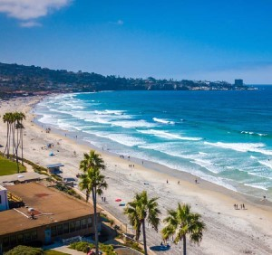
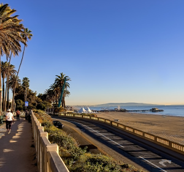
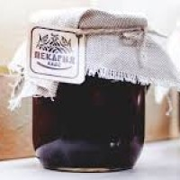
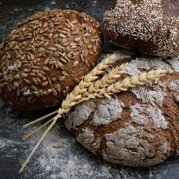

Recommended places to visit
San Diego
Discover the best beaches for families and off-leash dogs, beaches coveted by the world’s top surfers and the best beaches for bonfires, bike rides, tide pooling and more. So grab your beach towels, slather on the sunscreen, and get out to explore some of the finest beaches and bays in the world.
Lon Angeles
The Venice Beach Boardwalk is one of the top tourist destinations in Los Angeles. Part of the Ocean Front Walk, it's a long stretch of concrete paths hugging the beaches along the Pacific Ocean. But the surf and sand aren't the crowd-puller here. Instead, it's the vibrant beachside sidewalks, loaded with delightful characters.
Weather forecast
Gallery
 Make your own!
With our FRESH tool you are able to create your own special drink! You can mix up to 3 different fruits and give instructions so its prepared the way you like! Don't waste any time and come make your own special drink!